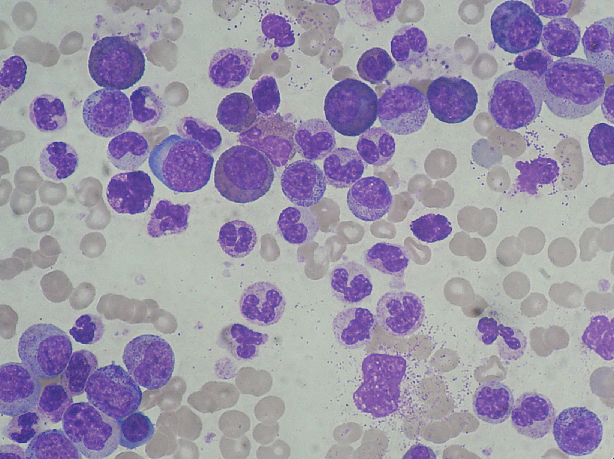

疾病 血液
CML ｜ 慢性骨髓性白血病 · Chronic Myeloid Leukemia 筆記更新 2026-07-26· 整理狀態：可用
加入閱讀清單 其他名稱 5 CML · 慢性骨髓性白血病 · 慢性髓性白血病 · Chronic Myeloid Leukemia · Ph chromosome
一句話總覽
唯一由 t(9;22) 費城染色體／BCR::ABL1 定義的 MPN：一個關不掉的酪胺酸激酶讓顆粒球系不受控增生。病根是單一激酶，所以 TKI 就能長期控制 ；放著不管則沿慢性期 → 加速期 → 芽細胞期走成急性白血病。
30 秒行動卡
診斷關鍵 ：WBC 大幅升高 ＋ 抹片顆粒球成熟全譜 ＋ 嗜鹼球↑ ＋ 脾腫 ＋ LAP score 低 → BCR::ABL1 （FISH／PCR）一槌定音
治療骨架 ：慢性期 Imatinib↗ 等 TKIBCR::ABL1 IS 定量 追里程碑
絕對不可 ：只憑 WBC 高就當感染／類白血病反應處理，沒看抹片、沒驗 BCR::ABL1
定義與定位
項目
重點
本質
Ph 染色體陽性的骨髓增生性腫瘤，BCR::ABL1 酪胺酸激酶持續活化
好發族群
成人，中年後漸增；常在健檢意外發現白血球升高
分類位置
慢性 × 髓性 → MPN 中唯一 Ph 陽性 者；見 Hema Category
關鍵分型
三期：慢性期 CP ／ 加速期 AP ／ 芽細胞期 BC
病因與機制
flowchart TD
A["t(9;22)(q34;q11)<br/>費城染色體"] --> B["BCR::ABL1 融合基因"]
B --> C["酪胺酸激酶<br/>持續活化"]
C --> D["顆粒球系不受控增生<br/>WBC 大幅升高"]
C --> E["髓外造血<br/>脾臟腫大"]
D --> F["累積額外突變"]
F --> G["加速期 → 芽細胞期"]
classDef key fill:#263238,stroke:#000,color:#fff,font-weight:bold
class G key
筆記中的流程與關係 一條線推出全部處置
病根只是「一個關不掉的激酶」——治療不是殺光細胞，而是用小分子把它關掉 （標靶治療的原型）。療效因此看 BCR::ABL1 定量下降 而非 WBC；抗藥＝激酶結構改變（如 T315I ）→ 換能結合該構型的藥。

CML 周邊血：同一視野可見從未成熟 myeloid precursor 到成熟 neutrophil 的完整連續譜，而不是只剩單一 blast population；實際判讀再主動找 basophilia、eosinophilia 與 myelocyte bulge。Source: Wikimedia Commons — Chronic Myeloid Leukemia smear , Paulo Henrique Orlandi Mourao（CC BY-SA 3.0）。
臨床表現
典型 ：多數無症狀，健檢發現 WBC 顯著升高；疲倦、體重下降、盜汗；左上腹飽脹／早飽 （脾腫）提示性 ：嗜鹼球升高 （幾乎恆定）、常伴嗜酸球升高；LAP score 低 少見但重要 ：WBC 極高時的 Leukostasis↗ （視力模糊、呼吸窘迫、意識改變）；芽細胞期表現如急性白血病
→ 相關主訴流程：Splenomegaly↗
診斷
診斷條件
內容
確診
證實 Ph 染色體 t(9;22) 或 BCR::ABL1 （細胞遺傳學／FISH／RT-PCR）——缺此不可診斷
血象
WBC 顯著升高、顆粒球成熟全譜 、嗜鹼球↑ 、PLT 可升高
對照線索
LAP score 低 （類白血病反應為高）
骨髓
過細胞；評估芽細胞比例 與取染色體，據以分 CP／AP／BC
要開的檢查 ：CBC with differential↗ 、Peripheral blood smear↗ 、Bone marrow biopsy↗ 、Cytogenetics FISH↗
鑑別診斷
要排除的
支持它的線索
怎麼排除
類白血病反應
有感染／發炎；毒性顆粒、Döhle body；LAP 高 、無嗜鹼球↑
BCR::ABL1 陰性
PMF 淚滴狀 RBC、leukoerythroblastosis、乾抽、巨脾
BCR::ABL1 陰性；驗 JAK2／CALR／MPL
MDS ／CMML單核球↑、明顯 dysplasia、計數常↓
BCR::ABL1 陰性＋骨髓形態
AML 芽細胞 ≥20%、無成熟全譜
骨髓芽細胞比例＋病史
治療
情境
處置
慢性期第一線
Imatinib↗ 等 TKI
療效監測
BCR::ABL1 IS 定量 ；未達里程碑 → 先查順從性，再驗激酶區突變
抗藥
依突變換 TKI；T315I 需特定藥物（ponatinib、asciminib）
加速期／芽細胞期
TKI ± 化療（依髓系或淋巴系選方案）＋評估移植
治癒選項
Allogeneic HSCT↗
支持性
初診高白血球時水化＋預防 Tumor lysis syndrome↗ ；Hydroxyurea↗ 可短期降細胞量作橋接
併發症與預後
要盯的併發症 ：Leukostasis↗ 、Tumor lysis syndrome↗ 、進展至加速期／芽細胞期預後 ：TKI 時代慢性期多可長期控制、接近常人壽命；達持續深度分子反應者，部分可在嚴格監測下嘗試停藥（treatment-free remission）不良徵象 ：芽細胞上升、嗜鹼球持續升高、新的染色體異常、治療中脾臟反而變大
禁忌與陷阱
絕對不可
情境
絕對不可
為什麼
該做什麼
WBC 顯著升高
直接當感染／類白血病反應給抗生素了事
會整個錯過 CML，延誤 TKI 並讓疾病進展
一定要看抹片 （成熟全譜＋嗜鹼球）並驗 BCR::ABL1
初診 WBC 極高
只顧降白血球，不水化、不防 TLS
大量細胞崩解可致急性腎衰竭
水化＋降尿酸；有 Leukostasis↗ 症狀才考慮 Leukapheresis↗
常見錯誤
把 CML 放進 JAK2 家族——CML 必須有 BCR::ABL1 ；PV ／ET ／PMF 才是 JAK2／CALR／MPL，不是 Ph+。
忘記 LAP score 低 與嗜鹼球↑ ，反把 CML 當 LAP 高的類白血病反應。
只看 WBC 判斷療效——里程碑看的是 BCR::ABL1 IS 。
相關連結
SOURCE & CONTEXT
來源與原始筆記 依 [[Hema Category]] 展開；WHO HAEM5（2022）
下載這篇 Markdown ↗ 網站保留原筆記的內容與整理狀態。